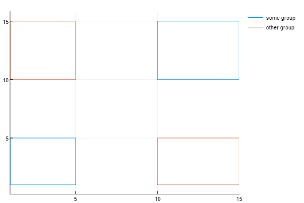

Input Data
Part of the power of Plots lies is in the many combinations of allowed input data. You shouldn't spend your time transforming and massaging your data into a specific format. Let Plots do that for you.
There are a few rules to remember, and you'll be a power user in no time.
Inputs are arguments, not keywords
While plot(x = 1:10, y = rand(10)) will work as expected, it is not the preferred method. In fact,
this method will simply call plot(1:10, rand(10)). Instead,
use plot(rand(10)). In this case, a single input will be mapped to the :y keyword, and a missing
value for :x will impute a unit range 1:10.
The reason lies in the flexibility of Julia's multiple dispatch, where every combination of input types can have unique behavior, when desired.
Columns are series
In most cases, passing a (n × m) matrix of values (numbers, etc) will create m series, each with n data points. This follows a consistent rule… vectors apply to a series, matrices apply to many series. This rule carries into keyword arguments. scatter(rand(10,4), markershape = [:circle, :rect]) will create 4 series, each assigned the markershape vector [:circle,:rect]. However, scatter(rand(10,4), markershape = [:circle :rect]) will create 4 series, with series 1 and 3 having markers shaped as :circle and series 2 and 4 having markers shaped as :rect (i.e. as squares). The difference is that in the first example, it is a length-2 column vector, and in the second example it is a (1 × 2) row vector (a Matrix).
Unconnected Data within same groups
As shown in the examples, you can plot a single polygon by using a single call to plot usingi the :path line type. You can use several calls to plot to draw several polygons
Now, let's say you're plotting n polygons grouped into g groups, with n < g. While you can use plot to draw separate polygons with each call, you cannot group two separate plots back into a single group. You'll end up with n groups in the legend, rather than g groups.
To adress this, you can use NaN as a path separator. A call to plot would then draw one path with disjoints The following code draws n=4 rectangles in g=2 groups.
using Plots; plotly() function rectangle_from_coords(xb,yb,xt,yt) [ xb yb xt yb xt yt xb yt xb yb NaN NaN ] end some_rects=[ rectangle_from_coords(1 ,1 ,5 ,5 ) rectangle_from_coords(10,10,15,15) ] other_rects=[ rectangle_from_coords(1 ,10,5 ,15) rectangle_from_coords(10,1 ,15,5 ) ] plot(some_rects[:,1], some_rects[:,2],label="some group") plot!(other_rects[:,1], other_rects[:,2],label="other group")
This examples produces the following:  )
DataFrames support
Using the StatPlots extension package, you can pass a DataFrame as the first argument (similar to Gadfly or R's ggplot2). For data fields or certain attributes (such as group) a symbol will be replaced with the corresponding column(s) of the DataFrame. Additionally, the column name might be used as the An example:
using StatPlots, RDatasets iris = dataset("datasets", "iris") scatter(iris, :SepalLength, :SepalWidth, group=:Species, m=(0.5, [:+ :h :star7], 12), bg=RGB(.2,.2,.2))

Functions
Functions can typically be used in place of input data, and they will be mapped as needed. 2D and 3D parametric plots can also be created, and ranges can be given as vectors or min/max. For example, here are alternative methods to create the same plot:
using Plots tmin = 0 tmax = 4π tvec = linspace(tmin, tmax, 100) plot(sin(tvec), cos(tvec)) plot(sin, cos, tvec) plot(sin, cos, tmin, tmax)
Vectors of functions are allowed as well (one series per function).
Images
Images can be directly added to plots by using the Images.jl library. For example, one can import a raster image and plot it with Plots via the commands:
using Plots,Images img = load("image.png") plot(img)
PDF graphics can also be added to Plots.jl plots using load("image.pdf"). Note that Images.jl requires that the PDF color scheme is RGB.
Shapes
Check out this tutorial to save Gotham: